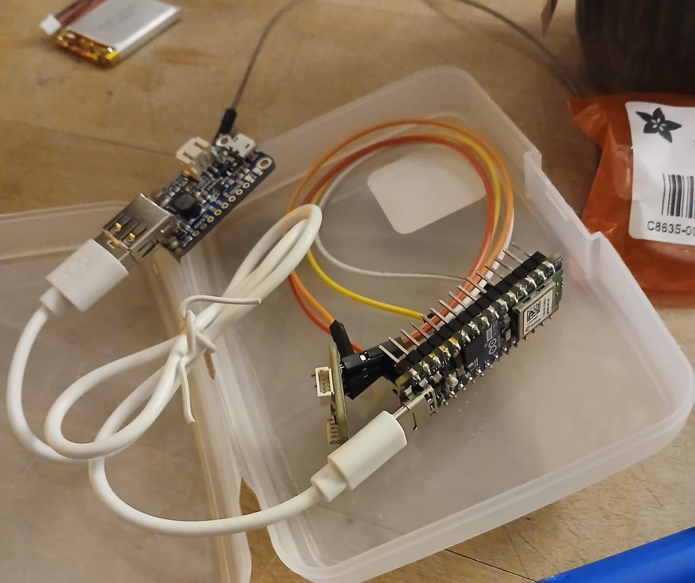
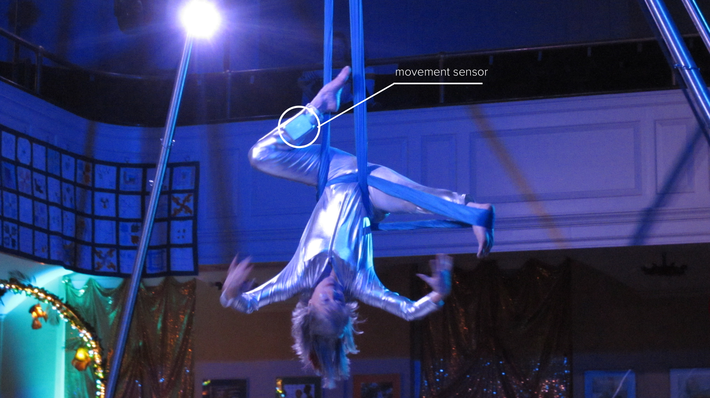
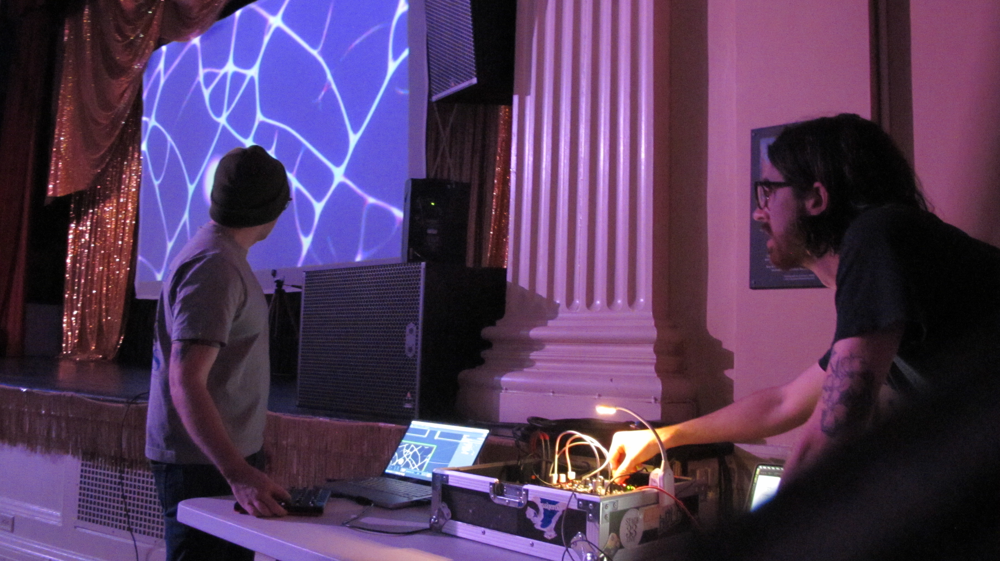
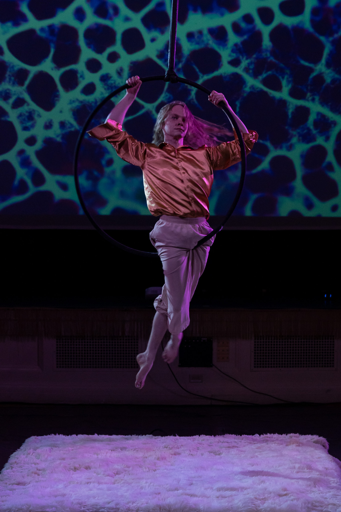
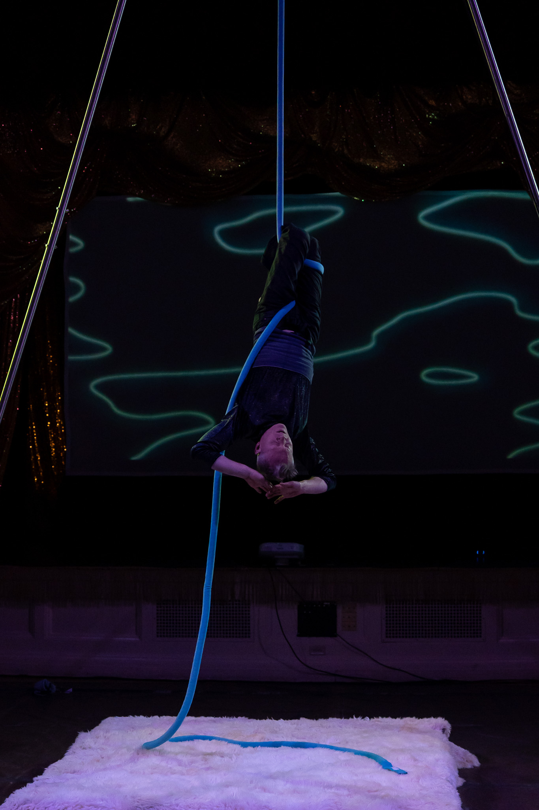
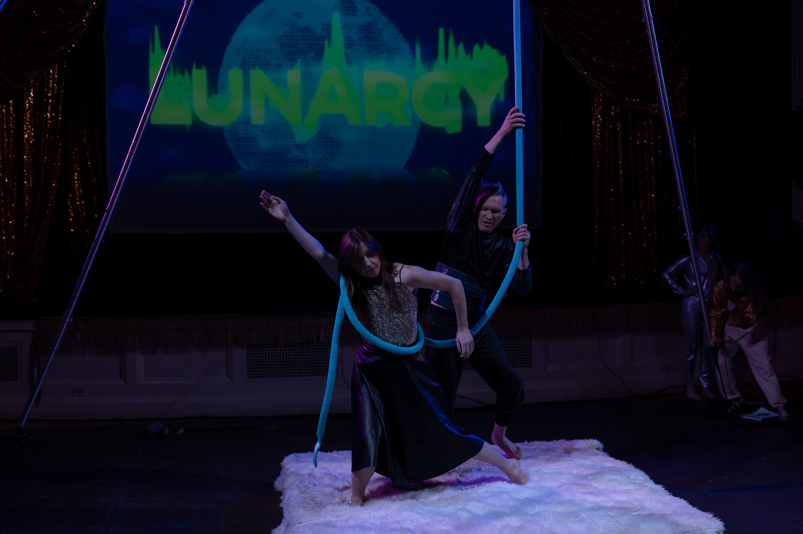

COMMISSIONED BY
Burlington City Arts Highlight NYE festival 2025.
ROLE
concept, music, electronic hardware design, design
ABOUT
No AI was used in the making of this project.
Lunarcy was a multidisciplinary interactive aerialist show designed for Burlington's NYE Highlight 2025 festival, featuring a custom-built sensor system for dancers. The project was built in collaboration with my frequent creative collaborator, artist and designer Nate Hicks.
The concept for the project was born from a previous installation, DANCER IN THE LOOP, which used cameras to sense the movement of gallery visitors to interact with the visualizations. For this show, we wanted more fine grained control over the dancer's movements. Cameras are only accurate when you are close to the lense, and we wanted to capture the quick movements of the aerialists in a more precise way.


For each piece, an aerialist wears a sensor on their leg. This sensor then sends real-time movement data over Wifi to a laptop running Touchdesigner, which manipulated the animated visuals. Each scene has a different mapping, so the dancers movement controlled a different visual parameter.
We started to prototype the board using an Arduino ESP32 microcontroller, which has built-in Wifi capabilities. We then attached a gyroscope and accelerometer sensor to the board to read the movement of the dancer's leg in 3D space.

Arduino code was then written to read the data from the sensor and parsed it for Touchdesigner.
After some testing, we ended up using gyroscope movement instead of acceleromeeter, as it was more responsive to the fast spins the aerialists often incorporated. It took some trial and error to find the right placement for each dancer, but most chose to wear the sensor on a leg (as seen in the photo below).

The theme of the show was "lunarpunk", so we leaned heavily into futuristic yet organic soundscapes. Visually, we were inspired by cooler color tones and natural patterns such as Physarum networks and topographic terrain maps.

The show was choreographed by an incredible team of dancers, led by Jacob Ian Ireland (head of Flying Squirrel Productions). I helped contribute design feedback for the scenes, but all Touchdesigner networks were engineered and brought to life by Nate Hicks who was the lead designer for the event.


Original music was composed by myself and Nate Hicks. More photos from the event can be viewed here. You can view a full recording of the performance on Youtube.
